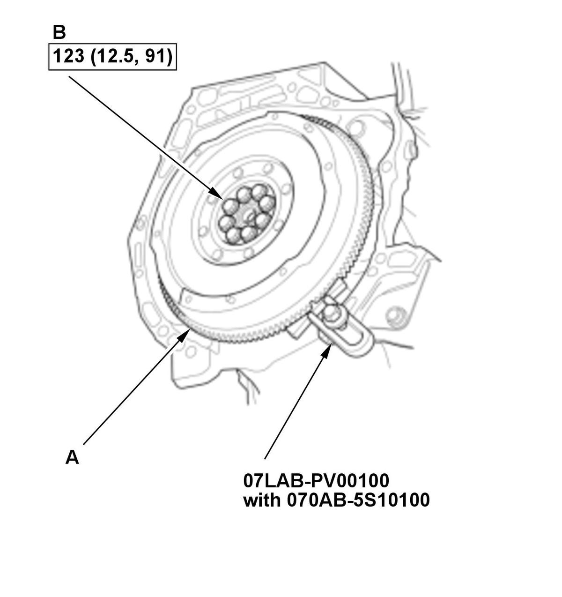
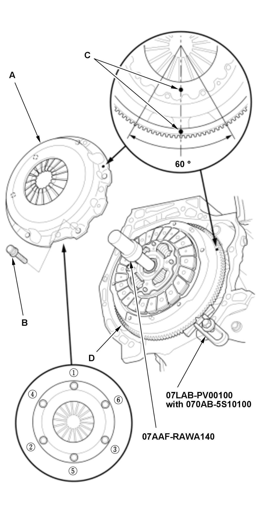
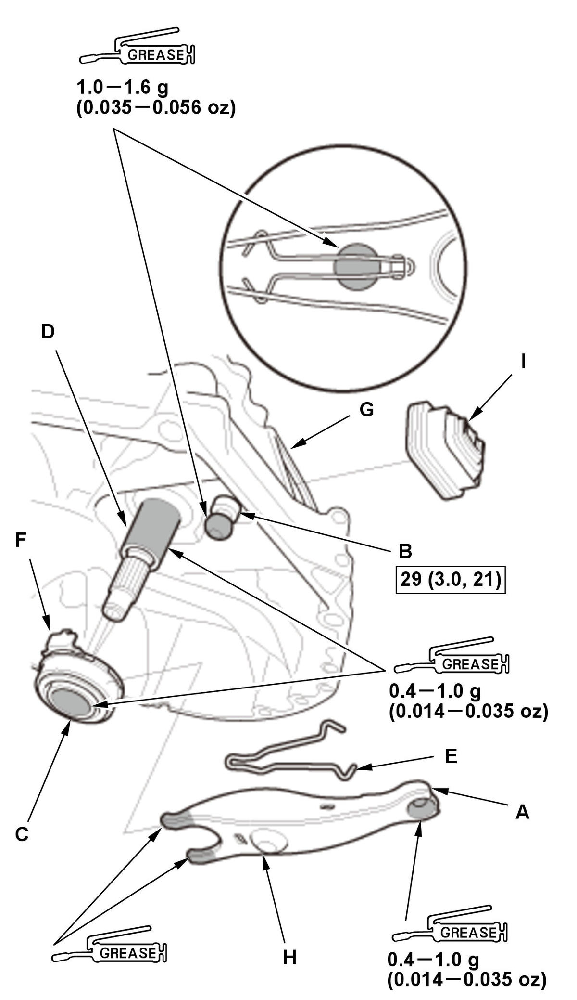

Clutch Removal and Installation (K20C1 (M/T)) (2017 2018 2019 2020 2021): Installation
NOTE: How to read the torque specifications .
Engine Side
- Flywheel - InstallFig 1: Tightening Flywheel Mounting Bolts In Crisscross Pattern In Several Steps With Torque Specifications (K20C1 - M/T - 2017-21)

Courtesy of HONDA, U.S.A., INC.1. Install the flywheel (A) on the crankshaft, and install the mounting bolts finger-tight. 2. Install the ring gear holder and the ring gear holder attachment.
3. Torque the flywheel mounting bolts (B) in a crisscross pattern in several steps.
- Flywheel Pilot Bearing - Install
1. Install a new flywheel pilot bearing (A) until it bottoms using the 15 x 135L driver handle and the 37 x 40 mm bearing driver attachment. - Clutch Disc - Install
1. Apply super high temp urea grease (P/N 08798-9002) to the splines (A) of the clutch disc (B). NOTE: Wipe off any excess grease.
2. Temporarily install the clutch disc onto the splines of the transmission mainshaft. Make sure the clutch disc slides freely on the mainshaft.
3. Install the clutch disc with facing its surface marked with a print mark (C) to the transmission side using the center shaft as shown.
- Pressure Plate - InstallFig 2: Tightening Pressure Plate Mounting Bolts In Several Steps With Tightening Sequence (K20C1 - M/T - 2017-21)

Courtesy of HONDA, U.S.A., INC.1. Install the pressure plate (A) and the pressure plate mounting bolts (B) finger-tight with aligning the point marks (C) across the pressure plate and the flywheel (D) as shown. 2. Tighten the pressure plate mounting bolts in the numbered sequence shown. Tighten the bolts in several steps to prevent warping the diaphragm spring. Make sure that there is not clearance between the pressure plate and the flywheel.
3. Remove the ring gear holder attachment, the ring gear holder, and the center shaft.
4. Make sure the diaphragm spring fingers are all the same height.
5. Check the release bearing, and replace it if necessary.
Specified Torque: 26 N.m (2.7 kgf.m, 19 lbf.ft) - Transmission - Install
Transmission Side
- Release Bearing - InstallFig 3: Exploded View Of Release Bearing Components With Torque Specifications (K20C1 - M/T - 2017-21)

Courtesy of HONDA, U.S.A., INC.1. Apply super high temp urea grease (P/N 08798-9002) to the release fork (A), the release fork bolt (B), the release bearing (C), and the release bearing guide (D) in the shaded areas.
NOTE:- Do not use silicone grease.
- Replace the release fork bolt if necessary.
2. Set the release fork set spring (E).
3. With the release fork slide between the release bearing pawls (F), install the release bearing on the mainshaft while inserting the release fork through the hole (G) in the clutch housing.
4. Align the detent (H) of the release fork with the release fork bolt, then press the detent of the release fork over the release fork bolt squarely.
5. Install the release fork boot (I). Make sure the boot seals around the release fork and the clutch housing.
6. Move the release fork (A) right and left to make sure that it fits properly against the release bearing (B) and that the release bearing slides smoothly. Wipe off any excess grease. - Transmission - Install